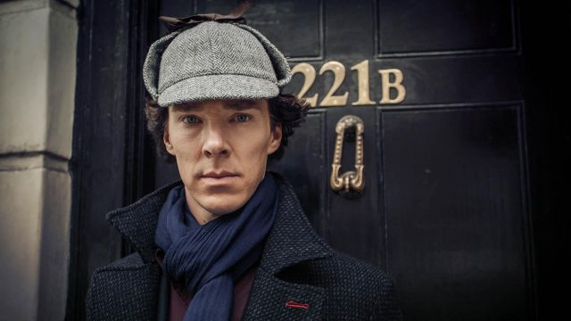

Wiki Page
Sherlock Holmes is a consulting detective, portrayed by Benedict Cumberbatch in the British mystery crime drama television series based on Sir Arthur Conan Doyle's Sherlock Holmes detective stories. Holmes is assisted by his flatmate and friend, Dr John Watson (Martin Freeman), who has returned from military service in Afghanistan with the Royal Army Medical Corps. Although Metropolitan Police Service Detective Inspector Greg Lestrade (Rupert Graves) and others are suspicious of Holmes at first, over time, his exceptional intellect and bold powers of observation persuade them of his value. In part through Watson's blog documenting their adventures, Holmes becomes a reluctant celebrity with the press reporting on his cases and eccentric personal life.
Moffat and Vertue became interested in casting Cumberbatch as the title character after watching his performance in the 2007 film Atonement. The actor was cast after reading the script for the creative team. The part is modelled as a charismatic secondary psychopath or "High functioning sociopath" as Sherlock self-describes, unlike Doyle's rendering as a primary psychopath, thereby allowing more opportunity or ambiguity for traits of empathy. "Cumberbatch", says The Guardian, "has a reputation for playing odd, brilliant men very well, and his Holmes is cold, techie, slightly Aspergerish".
Four series, each consisting of three episodes, have been produced. The first series was initially broadcast in July and August 2010 on the BBC, later premiering on Public Broadcasting Service (PBS) in the United States in October 2010. A second series of three episodes was first broadcast n the UK in January 2012, and then in the U.S. during May 2012. The third series premiered in the UK on 1 January 2014 and in the US on 19 January 2014. The series has been sold to 180 territories. A special episode premiered on 1 January 2016, on BBC One and PBS, marking the first time the series has aired on the same day in the UK and U.S. The fourth series began airing on BBC One and PBS on 1 January 2017 and concluded on 15 January 2017.
The show was produced by Hartswood Films for BBC Wales, while BBC Worldwide also provided co-production funding. Production was also co-produced by PBS, a network of public-service broadcasters in the United States, for WGBH-TV's Masterpiece Mystery! strand.
The show has received critical acclaim, sustaining positive reviews across its first three series. However, its fourth series received mixed reviews.
Click here for a secret!